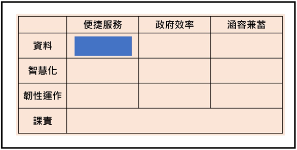

活動內容
✔️ 幫發展方向找個家 - 十宮格遊戲
遊戲介紹
遊戲過程採搶答模式，請聆聽主持人所唸出的題目情況，依照九宮格的標題填入正確的空格。待主持人唸完所有情況，九宮格將回形成線條形狀。

✔️ 破冰短劇
(上)
台上投影市場背景圖，阿明拿著包袱上舞台，打開包袱攤放商品
阿明：我們這區是提供公共服務的攤商，現在的客人都很挑剔，要讓所有人滿意很不容易，服務必須要好，但錢又必須花得少，服務真的很難做呀。
鄰居A：(拿著包袱上舞台，打開包袱攤放商品) 阿明你來了，今天也要加油喔！
鄰居B：(拿著包袱上舞台，打開包袱攤放商品) 希望今天客人都喜歡我們的服務，大家加油！
阿明：好！
（顧客A和顧客B上台走到阿明攤前。）
顧客A：（挑剔地）這些服務怎麼都沒有我想要的？
顧客B：對啊，一點新意都沒有，現在一堆問題這麼嚴重, 怎麼都沒解決那些問題。（顧客A和顧客B離開下台。）
阿明：聽了客人的話心裡很難過，做這麼多客人都不喜歡。
阿明：我們這區是提供公共服務的攤商，現在的客人都很挑剔，要讓所有人滿意很不容易，服務必須要好，但錢又必須花得少，服務真的很難做呀。
鄰居A：(拿著包袱上舞台，打開包袱攤放商品) 阿明你來了，今天也要加油喔！
鄰居B：(拿著包袱上舞台，打開包袱攤放商品) 希望今天客人都喜歡我們的服務，大家加油！
阿明：好！
（顧客A和顧客B上台走到阿明攤前。）
顧客A：（挑剔地）這些服務怎麼都沒有我想要的？
顧客B：對啊，一點新意都沒有，現在一堆問題這麼嚴重, 怎麼都沒解決那些問題。（顧客A和顧客B離開下台。）
阿明：聽了客人的話心裡很難過，做這麼多客人都不喜歡。
(下)
阿明：（對著天空許願）我想許願，希望我們大家都能推出更多滿足民眾的服務，讓大家更滿意。
鄰居A：（看著阿明）我們可以一起來討論，大家共同腦力激盪總有好想法。
鄰居B：對阿！既然你許願希望大家都好，那大家一起討論，一起把想法實現。
阿明：太好了，那我們來開會討論吧！我先提一個想法，我覺得我們應該利用資料提供民眾更多主動式的服務。
鄰居A：我覺得我們可以利用AI的技術，來提升我們作業效率。
鄰居B：我覺得我們應該建立無所不在的辦公環境，讓我們的服務不會因意外間斷。
阿明：這些想法太好了，讓我們一起實現將它們實現吧！
(One month later)
顧客A：看來有很多新服務，而且看來容易使用又很方便。
顧客B：對啊，原來新的公共服務可以給民眾帶來更多便利，我想趕快來使用這些服務。
阿明: (高興地)感謝大家一起努力討論和執行，讓我們服務被客人認同了!
阿明：(對台下所有人)歡迎大家來參加今天的聯席會，下午世界咖啡館的時段，就是我們大家一起許願，一起腦力激盪提出想法的時候，讓我們一起來許願，一起來實現。所以下午在參加世界咖啡館的時候，希望大家踴躍的提出許願單。各位可以開始動動腦和準備用餐了。
鄰居A：（看著阿明）我們可以一起來討論，大家共同腦力激盪總有好想法。
鄰居B：對阿！既然你許願希望大家都好，那大家一起討論，一起把想法實現。
阿明：太好了，那我們來開會討論吧！我先提一個想法，我覺得我們應該利用資料提供民眾更多主動式的服務。
鄰居A：我覺得我們可以利用AI的技術，來提升我們作業效率。
鄰居B：我覺得我們應該建立無所不在的辦公環境，讓我們的服務不會因意外間斷。
阿明：這些想法太好了，讓我們一起實現將它們實現吧！
(One month later)
顧客A：看來有很多新服務，而且看來容易使用又很方便。
顧客B：對啊，原來新的公共服務可以給民眾帶來更多便利，我想趕快來使用這些服務。
阿明: (高興地)感謝大家一起努力討論和執行，讓我們服務被客人認同了!
阿明：(對台下所有人)歡迎大家來參加今天的聯席會，下午世界咖啡館的時段，就是我們大家一起許願，一起腦力激盪提出想法的時候，讓我們一起來許願，一起來實現。所以下午在參加世界咖啡館的時候，希望大家踴躍的提出許願單。各位可以開始動動腦和準備用餐了。